정보처리기사(구) (2010-05-09 기출문제)
1과목: 데이터 베이스
1. 다음 설명 중 릴레이션의 특징으로 옳은 내용 모두를 나열한 것은?
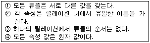
- ①
- ①, ②
- ①, ②, ③
- ①, ②, ③, ④
(정답률: 87%)

2. 데이터베이스의 정의 중 다음 설명과 관계되는 것은?
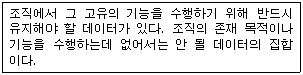
- Integrated Data
- Stored Data
- Operational Data
- Shared Data
(정답률: 71%)
3. 다음 SQL 명령 중 DDL에 해당하는 것으로만 나열된 것은?
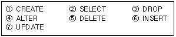
- ②,④,⑤,⑥,⑦
- ②,⑤,⑥,⑦
- ①,②,⑥
- ①,③,④
(정답률: 82%)
4. 분산 데이터베이스 시스템의 특징과 거리가 먼 것은?
- 신뢰성 및 가용성이 높다.
- 점진적 시스템 용량 확장이 용이하다.
- 지역 자치성이 높다.
- 소프트웨어 개발 비용이 감소한다.
(정답률: 85%)
5. 병행제어 기법 중 로킹에 대한 설명으로 옳지 않은 것은?
- 로킹의 대상이 되는 객체의 크기를 로킹 단위라고 한다.
- 데이터베이스, 파일, 레코드 등은 로킹 단위가 될 수 있다.
- 로킹의 단위가 작아지면 로킹 오버헤드가 증가한다.
- 로킹의 단위가 커지면 데이터베이스 공유도가 증가한다.
(정답률: 79%)
6. 순서가 A, B, C, D 로 정해진 입력 자료를 스택에 입력하였다가 출력한 결과로 가능한 것이 아닌 것은?
- B, A, D, C
- D, A, B, C
- B, C, D, A
- C, B, A, D
(정답률: 72%)
7. 릴레이션에서 튜플을 유일하게 구별하기 위해 사용하는 속성 또는 속성들의 조합을 의미하는 키(Key)는?
- Foreign Key
- Alternative Key
- Candidate Key
- Super Key
(정답률: 65%)
8. 하나의 트랜잭션 실행 중에 다른 트랜잭션의 연산이 끼어들 수 없음을 의미하는 트랜잭션의 특징은?
- Atomicity
- Consistency
- Durability
- Isolation
(정답률: 73%)
9. 다음 자료에 대하여 선택(Selection)정렬을 이용하여 오름차순으로 정렬하고자 한다. 2회전 후의 결과는?
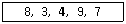
- 3, 4, 7, 8, 9
- 3, 4, 7, 9, 8
- 3, 8, 4, 9, 7
- 3, 4, 8, 9, 7
(정답률: 80%)
10. 다음 트리를 후위 순회(Post Traversal)한 결과는?
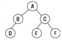
- A, B, D, C, E, F
- D, B, A, E, C, F
- D, B, E, F, C, A
- A, B, C, D, E, F
(정답률: 77%)
11. 관계대수 및 관계해석에 대한 설명으로 틀린 것은?
- 관계해석은 원하는 정보와 그 정보를 어떻게 유도하는가를 기술하는 특성을 지닌다.
- 관계해석과 관계대수는 관계 데이터베이스를 처리하는 기능과 능력 면에서 동등하다.
- 관계해석은 원래 수학의 프레디킷 해석에 기반을 두고 있다.
- 관계대수는 릴레이션을 처리하기 위한 연산의 집합으로 피연산자가 릴레이션이고 결과도 릴레이션이다.
(정답률: 52%)
12. 순차파일에 대한 설명으로 옳지 않은 것은?
- 연속적인 레코드의 저장에 의해 레코드 사이에 빈 공간이 존재하지 않으므로 기억장치의 효율적인 이용이 가능하다.
- 대화식 처리보다 일괄처리에 적합한 구조이다.
- 어떤 형태의 입/출력 매체에서도 처리가 가능하다.
- 새로운 레코드를 삽입하는 경우 파일 전체를 복사하지 않아도 된다.
(정답률: 69%)
13. 정규형에 대한 설명으로 옳지 않은 것은?
- 제 2정규형은 반드시 제 1 정규형을 만족해야 한다.
- 제 1정규형은 릴레이션에 속한 모든 도메인이 원자값 만으로 되어 있는 릴레이션이다.
- 정규화하는 것은 테이블을 결합하여 종속성을 제거하는 것이다.
- BCNF는 강한 제 3정규형이라고도 한다.
(정답률: 71%)
14. 데이터 모델의 구성 요소 중 데이터베이스에 표현된 개체 인스턴스를 처리하는 작업에 대한 명세로서 데이터베이스를 조작하는 기본 도구를 의미하는 것은?
- Relation
- Structure
- Constraint
- Operation
(정답률: 68%)
15. 데이터베이스의 특성 중 다음 설명에 해당하는 것은?
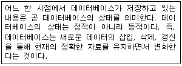
- Time Accessibility
- Concurrent Sharing
- Content Reference
- Continuous Evolution
(정답률: 75%)
16. 시스템 카탈로그에 대한 설명으로 옳지 않은 것은?
- 시스템 카탈로그는 DBMS가 스스로 생성하고 유지하는 데이터베이스 내의 특별한 테이블들의 집합체이다.
- 일반 사용자도 SQL을 이용하여 시스템 카탈로그를 직접 갱신할 수 있다.
- 데이터베이스 구조가 변경될 때마다 DBMS는 자동적으로 시스템 카탈로그 테이블들의 행을 삽입, 삭제, 수정한다.
- 시스템 카탈로그는 데이터베이스 구조에 관한 메타 데이터를 포함한다.
(정답률: 84%)
17. 다음 중 데이터베이스 설계시 물리적 설계 단계의 수행과정으로 옳은 내용 모두를 나열한 것은?
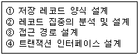
- ①, ②, ④
- ②, ③
- ①, ②, ③
- ②, ③, ④
(정답률: 62%)
18. 다음 설명이 의미하는 것은?
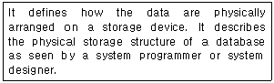
- Conceptual Schema
- External Schema
- Internal Schema
- Super Schema
(정답률: 66%)
19. 다음 설명이 뜻하는 것은?
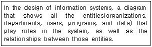
- E-R Diagram
- Flow Chart
- View
- Normalization
(정답률: 84%)
20. DBMS의 필수 기능 중 데이터베이스를 접근하여 데이터의 검색, 삽입, 삭제, 갱신 등의 연산 작업을 위한 사용자와 데이터베이스 사이의 인터페이스 수단을 제공하는 기능은?
- 정의 기능
- 조작 기능
- 제어 기능
- 절차 기능
(정답률: 73%)
2과목: 전자 계산기 구조
21. 채널은 연결 형태에 따라 고정채널과 가변채널로 구분하고, 정보의 취급 방법에 따라 멀티플렉서 모드와 버스트 모드로 구분하여 입출력 장치의 성질에 따라 셀렉터 채널과 바이트 멀티플렉서 채널, 블록 멀티플렉서 채널로 구분한다. 이러한 채널에 대한 설명으로 옳은 것은?
- 가변 채널은 채널 제어기가 특정한 I/O 장치들에 전용인 전송통로를 지닌 형태를 말하며 구성은 간단하지만 고정 채널에 비해 효율이 낮은 단점을 가지고 있다.
- 버스트 모드는 여러 개의 I/O 장치가 채널의 기능을 공유하여 시분할 적으로 데이터를 전송하는 형태로 비교적 저속의 I/O 장치 여러 개를 동시에 동작시키는데 적합하다.
- 멀티플렉서 모드는 하나의 I/O 장치가 데이터 전송을 행하고 있는 동안에는 채널의 기능을 완전히 독점하여 사용하므로 대량의 데이터를 고속으로 전송하는데 적합하다.
- 블록 멀티플렉서 채널은 하나의 데이터 경로를 경유한다는 점과 고속의 입출력 장치를 취급한다는 점에서 바이트 멀티플렉서 채널과 셀렉터 채널을 결합한 형태의 채널이다.
(정답률: 48%)
22. 사이클 훔침(cycle stealing)에 관한 설명 중 틀린 것은?
- DMA의 우선순위는 메모리 참조의 경우 중앙처리장치 보다 상대적으로 높다.
- 중앙처리장치는 메모리 참조가 필요한 오퍼레이션을 계속 수행한다.
- DMA가 중앙처리장치의 메모리 사이클을 훔치는 현상이다.
- 중앙처리장치는 메모리 참조가 필요 없는 오퍼레이션을계속 수행한다.
(정답률: 39%)
23. memory buffer에 대한 설명으로 올바른 것은?
- memory의 용량을 증가시킨다.
- memory의 데이터 저장을 쉽게 한다.
- memory의 고장을 대비해서 구성된다.
- memory의 access에 필요한 시간을 줄인다.
(정답률: 69%)
24. 논리식 함수
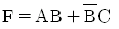
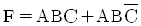
(정답률: 44%)
25. 다음 RS 플립플롭의 진리표 중에서 잘못된 것은?
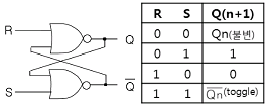
- Qn(불변)
- 0
- 1
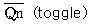
(정답률: 63%)
26. 다음 기억공간 관리 중 고정 분할 할당과 동적 분할 할당으로 나누어 관리되는 기법은?
- 연속로딩기법
- 분산로딩기법
- 페이징(paging)
- 세그먼트(segment)
(정답률: 28%)
27. RAID-5는 RAID-4의 어떤 문제점을 보완하기 위하여 개발되었는가?
- 병렬 액세스의 불가능
- 긴 쓰기 동작 시간
- 패리티 디스크의 액세스 집중
- 많은 수의 검사 디스크 사용
(정답률: 52%)
28. interleaved memory에 대한 설명과 관계가 없는 것은?
- 중앙처리장치의 쉬는 시간을 줄일 수 있다.
- 단위시간당 수행할 수 있는 명령어의 수를 증가시킬 수 있다.
- 이 기억장치를 구성하는 모듈의 수 만큼의 단어들에 동시 접근이 가능하다.
- 데이터의 저장 공간을 확장하기 위한 방법이다.
(정답률: 61%)
29. 벡터 처리기에서 사용할 수 있는 알고리즘으로 가장 적합한 것은?
- systolic 알고리즘
- GALT 알고리즘
- banker's 알고리즘
- 유전자 알고리즘
(정답률: 45%)
30. 명령어가 오퍼레이션 코드(OP code) 6비트, 어드레스 필드 16비트로 되어 있다. 이 명령어를 쓰는 컴퓨터의 최대 메모리 용량은?
- 16K word
- 32K word
- 64K word
- 1M word
(정답률: 56%)
31. 데이터의 주소를 표현하는 방식에 따라 분류할 때 계산에 의한 주소는 어디에 해당하는가?
- 완전 주소
- 약식 주소
- 생략 주소
- 자료 자신
(정답률: 60%)
32. 다음은 정규화된 부동소수점(floating point)방식으로 표현된 두 수의 덧셈 과정이다. 다음 중 그 순서가 바르게 나열된 것은? (단, A : 정규화, B : 지수의 비교, C : 가수의 정렬, D : 가수의 덧셈)
- B-C-D-A
- C-B-D-A
- A-C-B-D
- A-B-C-D
(정답률: 53%)
33. 밀 결합시스템(tightly-coupled system)에서는 프로세서들 간의 통신이 주로 무엇을 통해 이루어지는가?
- 메시지 전송
- I/O 장치
- 공유 기억 장치
- 캐시 기억 장치
(정답률: 51%)
34. 병렬 컴퓨터 구조를 설명한 내용으로 가장 옳지 않은 것은?
- 병렬 처리 기법을 구현한 컴퓨터 구조를 갖는다.
- 벡터(vector)컴퓨터는 병렬 컴퓨터에 속한다.
- 파이프라인 처리(pipeline process)방식을 사용한다.
- 다중프로그래밍(multiprogramming)기법을 사용한다.
(정답률: 43%)
35. 마이크로 오퍼레이션에 대한 설명 중 옳지 않은 것은?
- 마이크로 오퍼레이션은 CPU내의 레지스터들과 연산장치에 의해서 이루어진다.
- 프로그램에 의한 명령의 수행은 마이크로 오퍼레이션의 수행으로 이루어진다.
- 마이크로 오퍼레이션 중에 CPU 내부의 연산 레지스터, 인덱스 레지스터는 프로그램으로 레지스터의 내용을 변경할 수 없다.
- 마이크로 오퍼레이션이 실행될 때마다 CPU 내부의 상태는 변하게 된다.
(정답률: 63%)
36. shift 명령을 수행한 후 빈 공간에 채워지는 내용이 다른 것은?
- 왼쪽 논리 shift한 결과
- 오른쪽 논리 shift한 결과
- 왼쪽 산술 shift한 결과
- 오른쪽 산술 shift한 결과
(정답률: 53%)
37. CPU내 레지스터들과 주기억장치에 다음과 같이 저장되어 있다. 간접주소지정방식을 사용하는 명령어의 주소필드에 저장된 내용이 172일 때, 유효주소와 그에 의해 인출되는 데이터는 ?
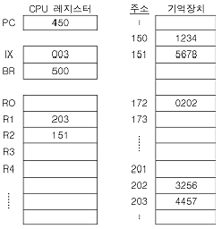
- 유효주소 : 172, 데이터 : 202
- 유효주소 : 172, 데이터 : 3256
- 유효주소 : 202, 데이터 : 3256
- 유효주소 : 202, 데이터 : 172
(정답률: 63%)
38. Flynn의 컴퓨터구조 분류 방식 중 일반적으로 배열처리기 구조라고도 하며, 여러 개의 처리기가 한 개의 제어 처리기에 의해 제어되는 구조를 갖고 있는 것은?
- SIMD
- MISD
- MIMD
- SISD
(정답률: 42%)
39. 메모리에서 두 개의 데이터를 가져와서 연산하고 결과를 다시 메모리에 저장한다고 하자. 이 때 메모리에 한번 접근하는데 1사이클, 연산하는데 1사이클 소요되고, 각각 4클록씩 걸린다면 10MHz의 CPU에서 이 작업은 전부 몇 초가 걸리는가?
- 0.4μs
- 4μs
- 1.6μs
- 16μs
(정답률: 47%)
40. 동기 가변식 마이크로 오퍼레이션 사이클 타임을 정의하는 방식은 수행시간이 유사한 마이크로 오퍼레이션들끼리 모아 집합을 이루고 각 집합에 대해서 서로 다른 마이크로 오퍼레이션 사이클 타임을 정의한다. 이 때 각 집합간의 마이크로사이클 타임을 정수배가 되도록 하는 이유는?
- 각 집합간의 서로 다른 사이클 타임의 동기를 맞추기 위하여
- 각 집합간의 사이클 타임을 동기식과 비동기식으로 하기 위하여
- 각 집합간의 사이클 타임을 모두 다르게 정의하기 위하여
- 사이클 타임을 비동기식으로 변환하기 위하여
(정답률: 67%)
3과목: 운영체제
41. 다음 상호배제 기법 중 특수한 하드웨어 자원이 필요한 것은?
- Dekker 알고리즘
- Peterson 알고리즘
- Test&Set 알고리즘
- Lamport의 빵집 알고리즘
(정답률: 40%)
42. 다음의 운영체제 운용 기법 중 라운드 로빈(Round Robin)방식과 가장 관계되는 것은?
- 일괄처리 시스템
- 시분할 시스템
- 실시간처리 시스템
- 다중프로그래밍 시스템
(정답률: 68%)
43. UNIX에서 사용자 인터페이스를 제공하며, 명령어 해석기라고도 일컬어지는 것은?
- Kernel
- Shell
- File descriptor
- I-node
(정답률: 73%)
44. 세그먼테이션 기법에 대한 설명으로 옳지 않은 것은?
- 각 세그먼트는 고유한 이름과 크기를 갖는다.
- 세그먼트 맵 테이블이 필요하다.
- 프로그램을 일정한 크기로 나눈 단위를 세그먼트라고 한다.
- 기억장치 보호키가 필요하다.
(정답률: 46%)
45. 다음 설명에 해당하는 자원 보호 기법은?
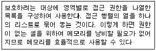
- 전역 테이블
- 접근 제어 리스트
- 권한 리스트
- 잠금-키(Lock-Key)
(정답률: 61%)
46. UNIX 파일시스템 구조에서 데이터가 저장된 블록의 시작 주소를 확인할 수 있는 블록은?
- 부트 블록
- I-node 블록
- 슈퍼 블록
- 데이터 블록
(정답률: 62%)
47. 다중 처리기 운영체제 구조 중 주/종(Master/Slave)처리기 시스템에 대한 설명으로 옳지 않은 것은?
- 주프로세서는 입·출력과 연산 작업을 수행한다.
- 종프로세서는 운영체제를 수행한다.
- 종프로세서는 입·출력 발생시 주프로세서에게 서비스를 요청한다.
- 한 처리기는 주프로세서로 지정하고 다른 처리기들은 종프로세서로 지정하는 구조이다.
(정답률: 75%)
48. 마스터 파일 디렉토리와 각 사용자별로 만들어지는 사용자 파일 디렉토리로 구성되는 디렉토리 구조는?
- 트리 디렉토리 구조
- 비순환 그래프 디렉토리 구조
- 1단계 디렉토리 구조
- 2단계 디렉토리 구조
(정답률: 59%)
49. 주기억장치 관리기법인 최악, 최초, 최적 적합기법을 각각 사용할 때, 각 방법에 대하여 5K의 프로그램이 할당되는 영역을 각 기법의 순서대로 옳게 나열한 것은? (단, 영역 A, B, C, D는 모두 비어 있다고 가정한다.)
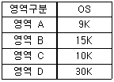
- 영역 D, 영역 A, 영역 A
- 영역 B, 영역 A, 영역 C
- 영역 A, 영역 B, 영역 C
- 영역 A, 영역 A, 영역 D
(정답률: 78%)
50. 페이지 프레임 수가 많으면 페이지 부재의 수가 줄어드는 것이 일반적이지만, 더 많은 수의 페이지 프레임을 할당하더라도 페이지 부재가 더 많이 발생하는 현상과 가장 관계되는 페이지 교체 알고리즘은?
- OPT
- LRU
- NUR
- FIFO
(정답률: 47%)
51. 스풀링(SPOOLing)에 대한 설명으로 틀린 것은?
- SPOOL은 Simultaneous Peripheral Operation On-Line의 약어이다.
- 기억장소는 주로 디스크를 이용한다.
- 출력 작업에서만 사용되어 진다.
- 고속 장치와 저속 장치 간의 처리 속도 차이를 줄이기 위한 방법이다.
(정답률: 59%)
52. 운영체제의 목적이 아닌 것은?
- 처리 능력의 향상
- 반환 시간의 최대화
- 사용 가능도 증대
- 신뢰도 향상
(정답률: 82%)
53. 시간 구역성(Temporal Locality)과 거리가 먼 것은?
- 집계(Totaling) 등에 사용되는 변수
- 배열 순례(Array Traversal)
- 부 프로그램(Sub program)
- 스택(Stack)
(정답률: 47%)
54. 분산 운영체제 구조 중 다음의 특징을 갖는 것은?
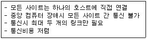
- 링 연결구조(RING)
- 다중접근 버스 연결구조(MULTI ACCESS BUS)
- 계층 연결구조(HIERARCHY)
- 성형 연결구조(STAR)
(정답률: 71%)
55. HRN방식으로 스케줄링 할 경우, 입력된 작업이 다음과같을 때 우선순위가 가장 높은 것은?
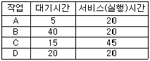
- A
- B
- C
- D
(정답률: 64%)
56. 128개의 CPU로 구성된 하이퍼큐브에서 각 CPU는 몇 개의 연결점을 갖는가?
- 6
- 7
- 8
- 10
(정답률: 73%)
57. 파일 시스템에 대한 설명으로 틀린 것은?
- 고급 언어에 대한 번역 기능을 제공한다.
- 사용자가 파일을 생성, 수정, 제거 할 수 있도록 한다.
- 파일 공유를 위해서 여러 종류의 접근 제어 기법을 제공한다.
- 불의의 사태에 대비한 예비(backup)와 복구(recovery)능력을 갖추어야 한다.
(정답률: 71%)
58. 프로세서 제어 블록을 갖고 있으며, 현재 실행 중 이거나 곧 실행 가능하며, CPU를 할당받을 수 있는 프로그램으로 정의할 수 있는 것은?
- 워킹 셋
- 세그먼테이션
- 모니터
- 프로세스
(정답률: 64%)
59. 교착상태의 해결 방법 중 점유 및 대기 부정, 비선점 부정, 환형대기 부정 등은 어떤 기법에 해당하는가?
- Prevention
- Avoidance
- Detection
- Recovery
(정답률: 57%)
60. UNIX 운영체제의 특징이 아닌 것은?
- 높은 이식성
- 계층적 파일 시스템
- 단일 작업용 시스템
- 다중 사용자 환경
(정답률: 74%)
4과목: 소프트웨어 공학
61. 캡슐화에 대한 설명으로 틀린 것은?
- 인터페이스가 단순화되고 객체 간의 결합도가 높아진다.
- 변경 작업시 부작용의 전파를 최소화한다.
- 캡슐화된 기능은 다른 클래스에서 재사용이 용이하다.
- 객체 안의 데이터와 연산들을 하나로 묶는 것을 의미한다.
(정답률: 64%)
62. 어떤 모듈이 다른 모듈의 내부 논리 조작을 제어하기 위한 목적으로 제어신호를 이용하여 통신하는 경우이며, 하위 모듈에서 상위 모듈로 제어신호가 이동하여 상위 모듈에게 처리 명령을 부여하는 권리 전도현상이 발생하게 되는 결합도는?
- Data Coupling
- Stamp Coupling
- Control Coupling
- Common Coupling
(정답률: 63%)
63. 효과적인 프로젝트 관리를 위한 3P를 옳게 나열한 것은?
- People, Problem, Process
- Power, People, Priority
- Problem, Priority, People
- Priority, Problem, Possibility
(정답률: 79%)
64. 소프트웨어에 대한 변경을 관리하기 위해 개발된 일련의 활동을 나타내며, 이런 변경에 의해 전체 비용이 최소화되고 최소한의 방해가 소프트웨어의 현 사용자에게 야기되도록 보증하는 것을 목적으로 하는 것은?
- 위험 관리
- 형상 관리
- 프로젝트 관리
- 유지보수 관리
(정답률: 53%)
65. 소프트웨어 재공학 활동 중 원시 코드를 분석하여 소프트웨어 관계를 파악하고 기존 시스템의 설계 정보를 재발견하고 다시 제작하는 작업은?
- Analysis
- Reverse Engineering
- Restructuring
- Migration
(정답률: 64%)
66. 장래의 유지보수성 또는 신뢰성을 개선하거나 소프트웨어의 오류발생에 대비하여 미리 예방 수단을 강구해 두는 경우의 유지보수 형태는?
- Preventive Maintenance
- Corrective Maintenance
- Perfective Maintenance
- Adaptive Maintenance
(정답률: 71%)
67. FTR의 지침 사항으로 거리가 먼 것은?
- 회의 동안 의제를 유지시킨다.
- 문제 영역을 명확히 표현한다.
- 논쟁과 반박의 제한을 두지 않는다.
- 제품의 검토에 집중한다.
(정답률: 73%)
68. 자료 흐름도에 대한 설명으로 틀린 것은?
- 자료 흐름은 점선으로 표시한다.
- 프로세스의 계층화가 가능하다.
- 버블 차트라고도 한다.
- 배경도를 통하여 전체 시스템의 범위를 표현한다.
(정답률: 64%)
69. 블랙 박스 테스트 기법 중 다음 설명에 해당하는 것은?
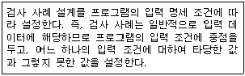
- Boundary Value Analysis
- Cause Effect Graphing Testing
- Equivalence Partitioning Testing
- Comparison Testing
(정답률: 45%)
70. 간트 차트에 대한 설명으로 틀린 것은?
- 자원 배치와 인원 계획에 유용하게 사용할 수 있다.
- 각 작업들의 시작점과 종료점을 파악할 수 있다.
- 프로젝트의 진도 관리를 수행할 수 있다.
- 화살표를 이용하여 작업 경로를 파악할 수 있다.
(정답률: 61%)
71. 소프트웨어 개발 영역을 결정하는 요인 중 다음 사항과 관계되는 것은?
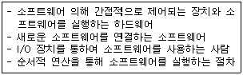
- 기능
- 인터페이스
- 성능
- 제약조건
(정답률: 71%)
72. 다음의 객체지향 기법에 관한 설명에서 ( )안 내용으로 공통 적용될 수 있는 것은?
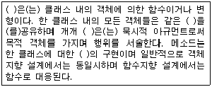
- 인스턴스
- 오퍼레이션
- 메시지
- 정보은닉
(정답률: 46%)
73. 럼바우의 객체지향 분석 기법에서 자료 흐름도와 가장 관련이 큰 것은?
- Functional Modeling
- Dynamic Modeling
- Object Modeling
- Class Modeling
(정답률: 54%)
74. 소프트웨어 위기 발생 요인과 거리가 먼 것은?
- 개발 일정의 지연
- 개발 비용 감소
- 소프트웨어 생산성의 저조
- 소프트웨어 품질의 미흡
(정답률: 69%)
75. 소프트웨어의 특징에 대한 설명으로 옳지 않은 것은?
- 소프트웨어 생산물의 구조가 코드 안에 숨어 있다.
- 논리적 절차에 따라 개발된다.
- 사용에 의해 마모되거나 소멸된다.
- 요구나 환경의 변화에 따라 적절히 변형시킬 수 있다.
(정답률: 79%)
76. 소프트웨어 재사용의 이점에 해당하지 않는 것은?
- 개발 시간과 비용 감소
- 소프트웨어 품질 향상
- 개발 생산성 증대
- 프로그램 언어 종속
(정답률: 72%)
77. 소프트웨어 품질 목표 중 쉽게 배우고 쉽게 사용할 수 있는 정도를 의미하는 것은?
- Reliability
- Usability
- Efficiency
- Integrity
(정답률: 75%)
78. CASE에 대한 설명으로 틀린 것은?
- 소프트웨어 모듈의 재사용이 향상된다.
- 자동화된 기법을 통해 소프트웨어 품질이 향상된다.
- 소프트웨어 사용자들이 소프트웨어 사용 방법을 신속히 숙지할 수 있도록 개발된 자동화 패키지이다.
- 소프트웨어 유지보수를 간편하게 수행할 수 있다.
(정답률: 57%)
79. 다음 검사 중 알파검사, 베타검사와 가장 관계가 있는 것은?
- Unit Test
- Integration Test
- System Test
- Validation Test
(정답률: 52%)
80. 상향식 통합 검사에 대한 설명으로 틀린 것은?
- 깊이 우선 통합법 또는 넓이 우선 통합법에 따라 스터브를 실제 모듈로 대치한다.
- 검사를 위해 드라이버를 생성한다.
- 하위 모듈을 클러스터로 결합한다.
- 하위 모듈에서 상위 모듈 방향으로 통합하면서 검사한다.
(정답률: 47%)
5과목: 데이터 통신
81. 데이터(Data) 전송제어 절차를 순서대로 옳게 나열한 것은?
- 회선접속 → 데이터링크 확립 → 정보전송 → 회선절단 → 데이터링크 해제
- 데이터링크 확립 → 회선접속 → 정보전송 → 데이터링크 해제 → 회선절단
- 회선접속 → 데이터링크 확립 → 정보전송 → 데이터링크 해제 → 회선절단
- 데이터링크 확립 → 회선접속 → 정보전송 → 회선절단 → 데이터링크 해제
(정답률: 72%)
82. 다음이 설명하고 있는 데이터 교환 방식은?
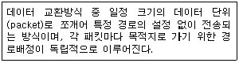
- 메시지 교환 방식
- 공간분할 교환방식
- 가상회선 방식
- 데이터그램 방식
(정답률: 52%)
83. 실제 전송할 데이터를 갖고 있는 터미널에게만 시간슬롯(Time Slot)을 할당하는 다중화 방식은?
- 동기식 시분할 다중화(Synchronous TDM)
- 주파수 분할 다중화(Frequency DM)
- 통계적 시분할 다중화(Statistical TDM)
- 광파장 분할 다중화(Wavelength DM)
(정답률: 53%)
84. IPv4와 IPv6의 패킷 헤더의 비교 설명으로 틀린 것은?
- IPv4의 프로토콜 필드는 IPv6에서 트래픽 클래스(Traffic Class)필드로 대치된다.
- IPv4의 TTL필드는 IPv6에서 홉 제한(Hop Limit)으로 불린다.
- IPv4의 옵션 필드(Option Field)는 IPv6에서는 확장 헤더로 구현된다.
- IPv4의 총 길이 필드는 IPv6에서 제거되고 페이로드 길이 필드로 대치된다.
(정답률: 34%)
85. PSK(Phase Shift Keying)방식이 적용되지 않은 변조 방식은?
- QDPSK
- QAM
- QVM
- DPSK
(정답률: 55%)
86. 다음 네트워크 A와 B사이에서 인터네트워킹을 위한 브리지(Bridge)의 일반적 기능으로 옳지 않은 것은?
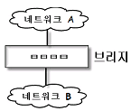
- 네트워크 A에서 전송한 모든 프레임을 읽고, 네트워크 B로 주소가 지정된 프레임들을 받아들인다.
- 네트워크 B에 대한 매체 접근 제어 프로토콜을 사용하여 네트워크 B에게로 프레임을 재전송한다.
- OSI 참조 모델의 데이터 링크 계층에 해당하는 것으로 LAN프로토콜 중 MAC 계층을 지원한다.
- 네트워크 A에서 송신한 프레임의 내용과 형식을 수정한다.
(정답률: 54%)
87. OSI 7 layer의 계층별 기능으로 틀린 것은?
- 물리계층 : 기계적인 규격과 전기적인 규격 규정
- 네트워크 계층 : 효율적인 경로 선택
- 세션계층 : 응용프로세스 간 대화 제어
- 데이터링크계층 : 정보 표현 형식을 구문형식으로 변환
(정답률: 62%)
88. 인터-네트워킹(Inter-Networking)을 위해 사용되는 네트워크 장비와 가장 거리가 먼 것은?
- 리피터(Repeater)
- 게이트웨이(Gateway)
- 라우터(Router)
- 증폭기(Amplifier)
(정답률: 69%)
89. 다음이 설명하고 있는 ARQ 방식으로 옳은 것은?
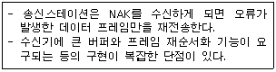
- Stop and Wait ARQ
- GO-back-N ARQ
- Re-Sending ARQ
- Selective-Repeat ARQ
(정답률: 56%)
90. 다음이 설명하고 있는 디지털 신호 부호화 방식은?
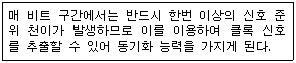
- NRZ-L
- TTL
- Manchester
- TDM
(정답률: 51%)
91. OSI 7계층 중 데이터 링크 계층의 프로토콜은?
- PPP
- RS-232C/V.24
- EIA-530
- V.22bis
(정답률: 67%)
92. 매체 접근 제어 방식 중 CSMA/CD와 토큰 패싱(Token passing)에 대한 설명으로 틀린 것은?
- CSMA/CD는 버스 또는 트리 토폴로지에서 가장 많이 사용되는 기법이다.
- 토큰 패싱은 토큰을 분실할 가능성이 있다.
- 토큰 패싱은 노드가 증가하면 성능이 좋아진다.
- CSMA/CD는 비경쟁 기법의 단점인 대기시간의 상당 부분이 제거 될 수 있다.
(정답률: 59%)
93. 회선교환 방식에 대한 설명으로 틀린 것은?
- 호 설정이 이루어지고 나면 정보를 연속적으로 전송할 수 있는 전용 통신로와 같은 기능을 갖는다.
- 호 설정이 이루어진 다음은 교환기 내에서 처리를 위한 지연이 거의 없다.
- 회선이용률 면에서는 비효율적이다.
- 에러 없는 정보전달이 요구되는 데이터 서비스에 매우 적합하다.
(정답률: 45%)
94. 이동 단말이나 PDA와 같이 소형 무선 단말기 상에서 인터넷을 이용할 수 있도록 해주는 프로토콜의 총칭은?
- POP
- WAP
- SMTP
- FTP
(정답률: 72%)
95. HDLC(High-level Data Link Control)의 링크 구성 방식에 따른 세 가지 동작모드에 해당하지 않는 것은?
- PAM
- NRM
- ARM
- ABM
(정답률: 59%)
96. 다음이 설명하고 있는 인터넷 서비스는?
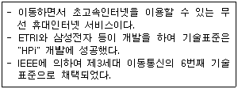
- Ubiquitous
- WiBro
- RFID
- VoIP
(정답률: 77%)
97. X.25 프로토콜에 대한 설명으로 옳은 것은?
- OSI 7계층 중 제 2계층인 데이터링크 계층에 속한다.
- DTE와 DCE사이의 인터페이스에 관한 규정이다.
- 회선 교환망에서 사용된다.
- 메시지 단위로 전송이 이루어진다.
(정답률: 53%)
98. 블록(block) 단위로 데이터를 전송하는 방식은?
- 비동기 전송
- 동기 전송
- 직렬 전송
- 병렬 전송
(정답률: 50%)
99. PCM(Pulse Code Modulation) 방식에서 PAM(Pulse Amplitude Modulation)신호를 얻는 과정은?
- 표본화
- 양자화
- 부호화
- 코드화
(정답률: 45%)
100. 문자 동기 전송방식에서 데이터 투과성(Data Transparent)을 위해 삽입되는 제어문자는?
- ETX
- STX
- DLE
- SYN
(정답률: 61%)
② 릴레이션은 각 행마다 유일한 식별자(primary key)를 가진다.
③ 릴레이션은 각 열마다 동일한 데이터 타입을 가진다.
④ 릴레이션은 행과 열의 순서가 중요하지 않다.
따라서, 옳은 정답은 "①, ②, ③, ④" 이다.